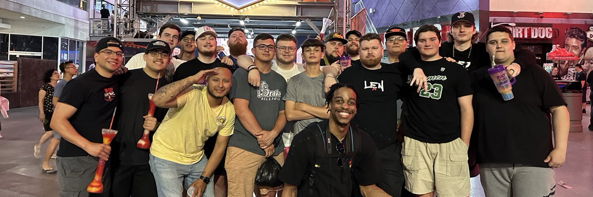

My Bio
My name is John Sarcione and I am from Attleboro, Massachusetts. I work at Helix Esports at Patriot Place in the customer service department and as an analyst for the academy Call of Duty team. I chose NEIT because it is close to home and I felt that the course goes in depth with my major. As a Software Engineering major, knowing multiple languages and aspects of programming helps prepare me for my future career. Hopefully I will use my degree at a stable tech firm as a software programmer, specifically in a city. Out of all the cities I would like to work at, Austin, Texas would be the ideal city as it is affordable and most high tech companies are moving there.
I enjoy playing video games, specifically Call of Duty and Valorant. I also enjoy hanging out with friends and going for long drives. I have traveled across the country for tournaments. Meeting friends along the way.
- Attleboro High School
- Quinnipiac University
- New England Institute of Technology
- Video Games
- Listening to Live Music
- Watching Sports